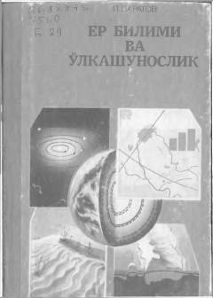

YBPedagogika institutlari talabalari uchun moʻljallangan geografiya va oʻlkashunoslik boʻyicha darslik.
Ushbu darslik pedagogika institutlari talabalari uchun moʻljallangan boʻlib, Yer shari tabiati, geografik qonuniyatlar va Oʻzbekiston tabiati haqida fundamental bilimlar beradi. Kitobda tabiatni muhofaza qilish, ekologik muammolar va geografik komponentlarning oʻzaro bogʻliqligi ilmiy asosda yoritilgan.